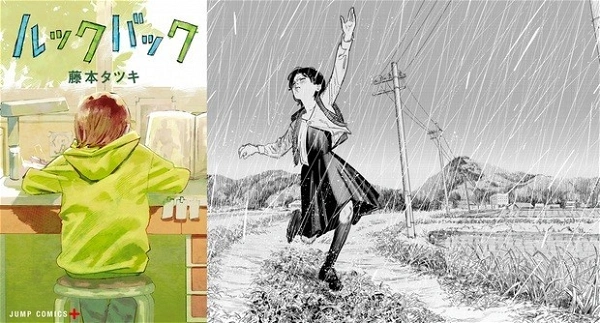
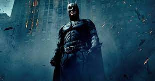
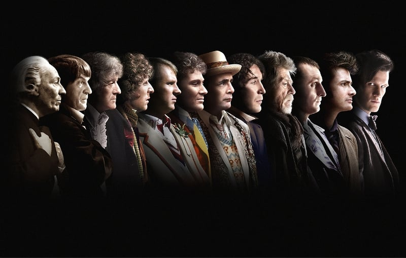

Recomendações Geek's
Animes

Naruto Shippuden
Uzumaki Naruto quer ser o melhor ninja de todos. Ele está indo muito bem, mas com o perigo iminente imposto pela misteriosa Akatsuki, Naruto percebe que ele deve treinar mais que nunca e deixa sua Vila para um intenso treinamento que o pressiona contra seus limites. Naruto Shippuden dá continuidade à história do ninja Naruto Uzumaki, iniciada no anime antecessor. Houve uma passagem de tempo de três anos desde que Sasuke Uchiha, o melhor amigo do protagonista, deixou Konoha e se tornou um ninja fugitivo com o objetivo de matar o irmão mais velho, Itachi. De acordo com uma pesquisa publicada pelo Crunchyroll, uma das maiores plataformas de streaming de anime, Naruto Shippuden foi o anime mais visto da década!
Attack On Titan
Attack On Titan é ambientado em um mundo onde a humanidade vive dentro de cidades cercadas por três enormes muralhas que os protegem dos gigantescos humanóides devoradores de humanos chamados de Titãs; a história segue Eren Jaeger, que jura exterminar os Titãs, após um Titã causar a destruição de sua cidade natal e a morte de sua mãe. Lançado em 2013, o anime tem sua aguardada conclusão em 2023, sendo um dos animes mais vistos da década e do ano, segundo o Crunchyroll.
Mangás
Look Back
Publicado em julho de 2021, Look Back é um web manga one-shot (apenas uma edição) e encabeçou a lista Kono Manga Sugoi 2022, que elegeu os melhores mangás do ano. Esta publicação shounen nos apresenta à estudante Ayumi Fujino, uma jovem com grandes talentos para desenhar mangás. ma repentina concorrência pode se transformar numa grande amizade. Já uma tragédia inesperada pode ser evitada por uma viagem no tempo? Look Back é uma história cheia de reviravoltas e muitas emoções.
Chi: Chikyū no Undō ni Tsuite - Uoto
Este mangá seinen foi publicado entre setembro de 2020 e abril de 2022, e também está no pódio da lista de melhores mangás Kono Manga Sugoi 2022. Sua trama se passa na Polônia, no século 15. Estudantes que acreditam em ideias modernas, como o fato de a Terra girar em torno do Sol, sofrem perseguições, torturas e até pena de morte. Neste contexto, conhecemos Rafal, um jovem prodígio que está se formando em teologia, disciplina vista como a mais importante na universidade. Tudo pode mudar quando ele se encontra com um homem misterioso, que lhe apresenta os estudos da possível verdade em que as "ideias hereges" acreditam.
Filmes
Batman: O Cavaleiro das Trevas
Este é, sem dúvida alguma, um filme do Coringa – ainda que o Batman seja o protagonista de direito. É o vilão que dita as ações do longa, que expande a história e captura a atenção do espectador. Tudo isso calcado em um roteiro complexo e em uma atuação memorável de Heath Ledger, que morreu antes do filme estrear nos cinemas e não pode receber o Oscar de Melhor Ator Coadjuvante que recebeu da Academia. As sequências gravadas em câmeras de IMAX são de tirar o fôlego, em uma produção que atinge o maior apuro técnico e criativo visto entre os longas de super-herói. Há ainda toda uma questão sobre bem e mal, caos e ordem e tudo mais que ficará clara para você nas entrelinhas dos diálogos, basta ficar atento. É um filme sério, sim, e há quem diga até que é menos divertido justamente por causa dessa seriedade – mas isso está longe de ser um problema, não é?
De Volta Para O Futuro
Robert Zemeckis se uniu com a Amblin de Steven Spielberg para trazer aquele que é um dos grandes filmes de aventura e ficção-científica dos anos 1980. Na história, um cientista maluco (Christopher Lloyd) constrói uma máquina do tempo a partir de um DeLorean DMC-12, mas se envolve com terroristas líbios e faz com que seu amigo, Marty McFly (Michael J. Fox, no papel que marcou a vida do ator) volte aos anos 1950. Assim surge um filme divertido, em uma história com humor e aventura na mesma medida. Clássico, que renderia mais duas continuações (também memoráveis).
Séries
Doctor Who
A série de ficção científica mais longa da TV, com 26 temporadas na sua primeira fase (1963 - 1989) e mais sete desde 2005. A trama acompanha as aventuras do Doutor, um homem que viaja no tempo com a missão de resolver problemas que encontra pela história. Até hoje, já existiram 12 doutores.
The Big Bang Theory
Vários nerds não colocariam The Big Bang Theory nesta lista, mas que a série é um sucesso e tem personagens que viraram ícone nerds, isso tem. A trama acompanha os amigos cientistas Leonard, Sheldon, Howard e Raj, que fazem muitas referências a elementos da cultura pop e nerd, com muito video game, quadrinhos e cosplays. A série é transmitida no Brasil pela Warner, nas terças, às 20h.
Voltar ao início
Visite nosso Instagram